ReluctanceSalient reluctance |

|
Information
This information is part of the Modelica Standard Library maintained by the Modelica Association.
The salient reluctance models the relationship between the complex magnetic potential difference
 and the complex magnetic flux
and the complex magnetic flux  ,
,

which can also be expressed in terms complex phasors:

Parameters (1)
| R_m |
Value: Type: SalientReluctance Description: Magnetic reluctance in d=re and q=im axis |
|---|
Connectors (2)
| port_p |
Type: PositiveMagneticPort Description: Positive quasi-static magnetic port of fundamental wave machines |
|
|---|---|---|
| port_n |
Type: NegativeMagneticPort Description: Negative quasi-static magnetic port of fundamental wave machines |
Components (3)
| V_m |
Type: ComplexMagneticPotentialDifference Description: Complex magnetic potential difference |
|
|---|---|---|
| Phi |
Type: ComplexMagneticFlux Description: Complex magnetic flux |
|
| R_m |
Type: SalientReluctance Description: Magnetic reluctance in d=re and q=im axis |
Used in Examples (2)
|
Modelica.Magnetic.QuasiStatic.FundamentalWave.Examples.Components
Multi phase inductance |
|
|
Modelica.Magnetic.QuasiStatic.FundamentalWave.Examples.Components
Comparison of equivalent circuits of eddy current loss models |
Used in Components (3)
|
Modelica.Magnetic.QuasiStatic.FundamentalWave.BasicMachines.Components
Symmetric winding model coupling electrical and magnetic domain |
|
|
SymmetricMultiPhaseCageWinding Modelica.Magnetic.QuasiStatic.FundamentalWave.BasicMachines.Components
Symmetrical rotor cage |
|
|
Modelica.Magnetic.QuasiStatic.FundamentalWave.BasicMachines.Components
Rotor cage with saliency in d- and q-axis |